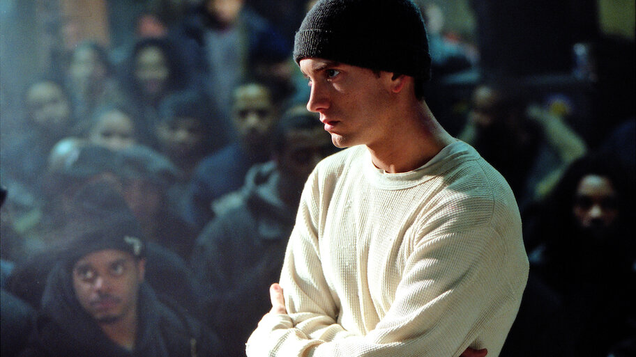

Eminem nasceu em 17 de outubro de 1972, em St. Joseph, Missouri, e cresceu em Detroit, Michigan. Criado em um ambiente difícil, enfrentou pobreza, bullying e uma infância conturbada. Desde cedo, encontrou na música uma forma de expressão, mergulhando no mundo do rap em batalhas de rima nas ruas de Detroit. Em 1999, o álbum The Slim Shady LP marcou sua estreia mundial com apoio do produtor Dr. Dre. O sucesso foi imediato, e Eminem se destacou pela mistura de sarcasmo, crítica social e histórias pessoais chocantes. A sequência de álbuns como The Marshall Mathers LP e The Eminem Show consolidou sua fama como um dos maiores artistas da história do hip-hop. Além da música, enfrentou batalhas pessoais, como o vício em drogas, problemas familiares e conflitos judiciais. Mesmo assim, retornou com força total, lançando trabalhos como Recovery e Music to Be Murdered By. Eminem também atuou no cinema, sendo premiado pelo filme 8 Mile e pela música "Lose Yourself", que venceu o Oscar. Sua história é a prova de que, com talento e persistência, é possível transformar dor em arte.
